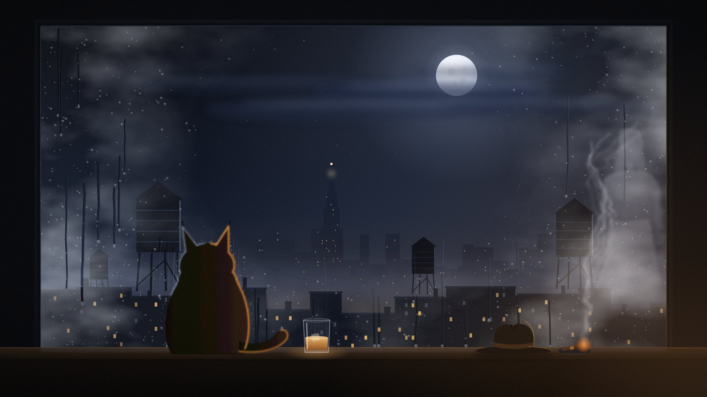
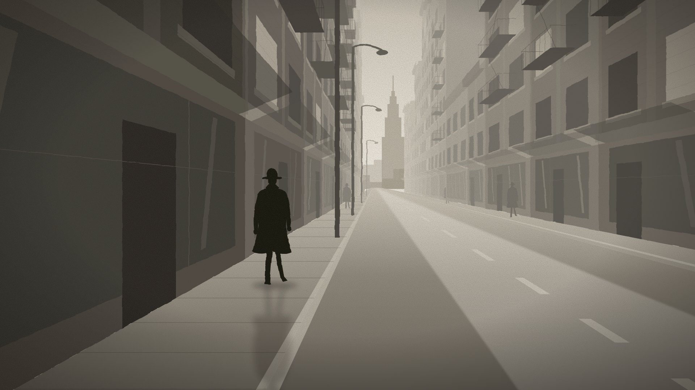
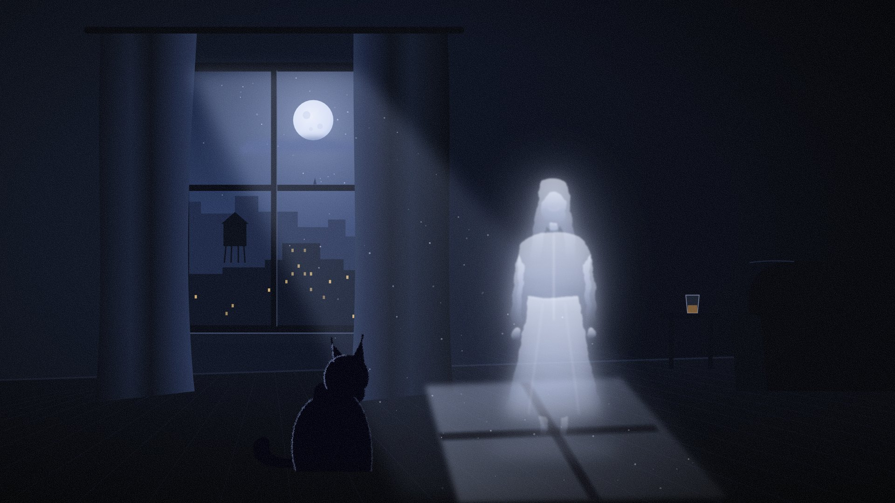
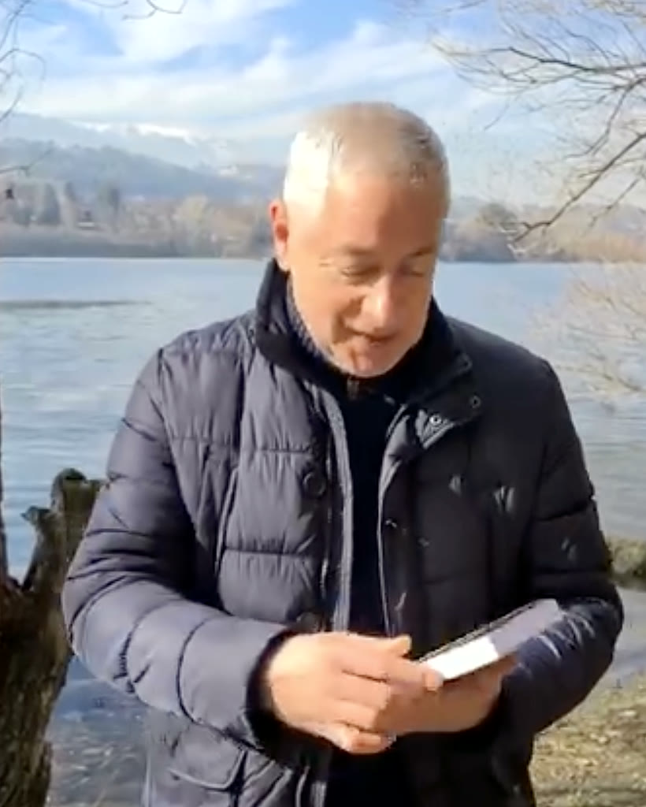

{{ t.ghostWrite }}
{{ t.scrollHint }}

{{ t.lucasRole }}
{{ t.lucasName }}

{{ t.oliviaRole }}
{{ t.oliviaName }}
{{ t.castTitle }}
{{ lx.no }}
{{ lx.name }}
{{ lx.role }}
{{ lx.desc }}
{{ t.featLabel }}
{{ feat.title }}
{{ feat.subtitle }}
{{ feat.blurb }}
{{ t.alsoOn }}
{{ t.amazonBtn }}
{{ t.offerNote }}

{{ t.readsKicker }}
{{ t.readsTitle }}
{{ t.readsDesc }}
{{ t.readsTrack }}
{{ t.readsDuration }}
{{ t.readsHint }}
{{ t.collectionTitle }}
{{ t.collectionNote }}
{{ b.title }}
{{ b.tag }}
{{ t.openArrow }}
+
{{ t.soon }}
{{ t.aboutKicker }}
{{ t.aboutText }}
{{ t.aboutName }}
{{ t.aboutRole }}